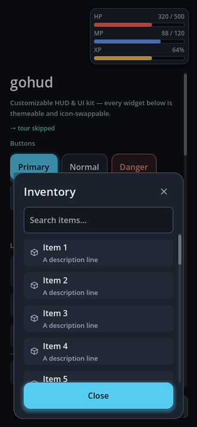
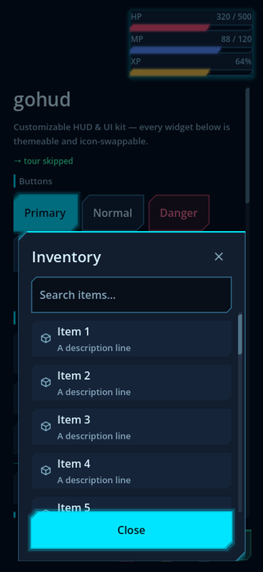

무엇을 대신해 주는가
게임 UI 에서 시간을 가장 많이 잡아먹는 것은 버튼 모양이 아니라, 기기마다 다르게 어긋나는 것들이다. gohud 는 그 어긋남을 한곳에서 처리한다.
모든 치수가 토큰이다
여백·모서리·글자 크기를 숫자로 쓰지 않고 이름으로 부른다. 테마를 갈아 끼우면 화면 전체가 함께 움직인다.
보이는 크기와 누르는 크기가 다르다
닫기 버튼은 36dp 로 보이지만 터치 타깃은 48dp 다. 슬롯이 촘촘히 깔려도 겹친 자리는 중심이 가까운 쪽이 가져간다.
노치와 키보드를 피한다
안전영역 안에 HUD 를 붙이고, 가상 키보드가 올라오면 입력 칸이 그 위로 올라온다.
뒤로 가기가 하나씩 닫힌다
Escape 와 Android 뒤로 가기가 가장 위 창 하나만 닫는다. 겹쳐 띄운 창이 한꺼번에 사라지지 않는다.
알림은 입력을 훔치지 않는다
스낵바 위를 눌러도 그 아래 버튼이 눌린다. 포커스도 가져가지 않는다.
아이콘은 이름으로 부른다
위젯은 GoIconSet.CLOSE 처럼 이름만 안다. 세트를 갈아 끼우면 코드를 한 줄도 안 고치고 그림이 바뀐다.
설치
애드온 폴더를 프로젝트에 넣기만 하면 된다.
배포 ZIP 또는 애셋 스토어
프로젝트 루트에 풀어 res://addons/gohud/ 가 되게 한다. 그것이 전부다.
git submodule 로
git submodule add <gohud-저장소-주소> addons/gohud
git submodule update --init저장소 루트가 곧 애드온 폴더라 Godot 이 기대하는 자리에 그대로 떨어진다.
빠른 시작
가장 자주 쓰는 셋 — 확인창, 바텀 시트, HUD 모서리.
확인창을 await 로 받는다
var dialogs := GoDialogs.new()
add_child(dialogs)
if await dialogs.confirm("저장 삭제", "되돌릴 수 없습니다."):
delete_save()검색 칸과 바닥 버튼이 고정된 바텀 시트
var sheet := GoSheet.new()
add_child(sheet)
sheet.open("가방")
sheet.toolbar().add_child(GoStyle.line_edit("검색…"))
sheet.toolbar().visible = true
for item in items:
sheet.body.add_child(GoStyle.list_button(GoIconSet.BOX, item.name, _use.bind(item)))
sheet.footer().add_child(GoStyle.button("닫기", sheet.close, GoStyle.Tone.PRIMARY))
sheet.footer().visible = truebody 에 넣으면 목록이 길어질 때
화면 밖으로 밀린다. footer() 는 언제나 보인다.
HUD 모서리에 체력 막대
var corner := GoHudAnchor.new()
corner.spot = GoHudAnchor.Spot.TOP_LEFT
corner.landscape_spot = GoHudAnchor.Spot.TOP_RIGHT # 가로에서는 다른 자리로
add_child(corner)
var hp := GoBar.new()
hp.label_text = "HP"
hp.ink = GoUi.color(GoTheme.DANGER)
corner.add_child(hp)
hp.set_values(320, 500)생김새 바꾸기 — 색뿐 아니라 모양까지
Theme 는 엔진이 그려 주는 것의 모양만 바꾼다. StyleBoxFlat 의 모서리는 둥근 것뿐이고, 조이스틱·퀵슬롯·코치마크는 코드가 직접 그리므로 테마를 아무리 갈아 끼워도 모양이 안 바뀐다. 그래서 gohud 는 프리셋을 쓴다.
GoUi.use_preset(GoThemePresets.SCIFI_DARK) # 테마·스킨·아이콘이 한꺼번에| 프리셋 | 생김새 |
|---|---|
default_dark | gohud 원래 모습 — 둥근 모서리, 부드러운 파란 강조 |
default_light | 같은 모양에 밝은 팔레트 |
scifi_dark | 챔퍼 모서리, 시안 네온 테두리와 발광, 육각 조이스틱, 조준 표식 |
scifi_light | 같은 각진 모양에 밝은 설계도 팔레트 |

default_dark — 둥근 모서리, 부드러운 파란 강조
default_light — 같은 모양, 밝은 팔레트
scifi_dark — 챔퍼 모서리, 시안 네온
scifi_light — 같은 각진 모양, 설계도 팔레트네 장 모두 같은 갤러리 화면이다. 코드는 한 줄도 다르지 않고 프리셋 이름만 바뀌었다. 버튼 모서리, 토글 모양, 목록 줄, 입력 칸 테두리가 함께 움직이는 것이 보인다.
같은 화면, 폰에서도 데스크톱에서도
위 네 장은 폰 세로다. 아래는 같은 코드를 1280×800 으로 띄운 것이다 — 본문은 읽기 좋은 폭(480dp)에서 멈춰 가운데에 서고, HUD 는 화면 구석에 남는다. 폼은 떠 있는 HUD 와 겹치지 않게 비키되, 닿지 않으면 밀지 않는다 — 넓은 화면에서 괜히 밀면 본문이 한쪽으로 치우친다.

default_dark · 1280×800
scifi_dark · 1280×800
에디터에서 고르려면 프로젝트 설정 → Gohud → Theme → Preset, 설정 리소스에서는
GoConfig.preset 칸이다. theme·skin·icons 를 직접
채우면 그쪽이 프리셋보다 우선한다 — 프리셋을 고른 뒤 한 칸만 자기 것으로 바꿔 끼울 수 있다.
같은 시트, 다른 생김새


theme 한 칸만 채우면 된다.
→ 토큰 목록·내 프리셋 만들기·가독성 검사
스킨 — 테마가 닿지 못하는 자리
GoSkin 은 조이스틱, 퀵슬롯 판, 코치마크 링, 칩, 스켈레톤, 알림 상자, 분절 선택의 모양을 맡는다. 상속해서 바꾸고 싶은 것만 덮어쓰면 나머지는 기본 모양 그대로다.
class_name MySkin extends GoSkin
func slot_box(accent: Color, lit: bool) -> StyleBox:
var box := GoStyleBoxCut.new()
box.bg_color = accent
box.cut = 6.0
box.edge_color = accent # 위쪽 강조 변
return box
func draw_joystick(canvas: CanvasItem, center: Vector2, knob: Vector2,
radius: float, knob_radius: float, ink: Color, base: Color, active: bool) -> void:
canvas.draw_circle(center, radius, Color(base, 0.4))
canvas.draw_circle(knob, knob_radius, ink)StyleBoxFlat 로 못 만드는 모양
| 클래스 | 낼 수 있는 모양 |
|---|---|
GoStyleBoxCut | 모서리를 사선으로 자른 판(챔퍼), 한 변만 굵은 강조 변, 바깥으로 번지는 발광 |
GoStyleBoxBracket | 변을 두르지 않고 네 모서리만 짧게 긋는 조준 표식 |
둘 다 여느 StyleBox 처럼 Theme 리소스 안에 그대로 저장된다 — 즉 테마가 모양을 바꿀 수 있다.
bg_color 나
corner_radius 를 고치는 옛 호출부와의 약속이기 때문이다. 커스텀 모양을 지켜야 하면
GoStyle.surface() 를 쓴다.
위젯
전부 .new() 로 만들어 add_child() 하면 된다. 씬 파일이 필요 없다.
| 클래스 | 바탕 | 하는 일 |
|---|---|---|
GoSurface | Control | 떠 있는 창의 껍데기 — 가운데·아래·붙임 배치, 고정 머리말·바닥, 스크롤 본문, 끌어서 높이 조절 |
GoSheet | CanvasLayer | 아래에서 올라오는 페이지. 자체 층을 가져 HUD 위에 확실히 뜬다 |
GoDialogs | Node | await 로 받는 확인·알림 |
GoForm | MarginContainer | 브레이크포인트마다 폭을 제한하고 가상 키보드를 피하는 폼 |
GoScroll | ScrollContainer | 손가락 스크롤. 스크롤바가 카드 여백 자리로 들어간다 |
GoNotice | PanelContainer | 입력도 포커스도 훔치지 않는 스낵바 |
GoPromptCard | PanelContainer | 화면을 막지 않는 질문 카드 |
GoCoachMark | Control | 실제 컨트롤을 가리키는 안내 투어. 가리킨 것을 누르면 다음으로 넘어간다 |
GoHudAnchor | Control | HUD 를 화면 아홉 자리 중 하나에 안전영역을 지켜 붙인다 |
GoBar | Control | 체력·마나·경험치 막대. 값·분수·퍼센트 표시와 부드러운 보간 |
GoSlot | Button | 퀵슬롯 한 칸 — 아이콘·수량·쿨다운·단축키를 판 한 장에 |
GoJoystick | Control | 고정·따라오기·상대 모드의 가상 조이스틱 |
GoIconButton | Button | 작게 보이고 크게 눌리는 아이콘 버튼 |
GoStyle | 정적 | 버튼·칩·목록 줄·표·아바타·탭을 한 줄로 만드는 공장 |
토큰
모든 색과 치수는 Theme 의 GoHud 타입 아래에 이름으로 산다. 코드에서는
GoUi.color()·GoUi.metric() 으로 꺼낸다.
GoUi.color(GoTheme.ACCENT) # 강조색
GoUi.metric(GoTheme.GAP) # 줄 간격(dp)
GoUi.font_size(GoTheme.ROLE_CAPTION) # 역할별 글자 크기| 갈래 | 이름 |
|---|---|
| 색 | background surface surface_soft surface_high border text secondary muted accent on_accent success warning danger info scrim shadow track |
| 치수(dp) | touch button_height gap_tiny gap_small gap gap_large padding padding_compact radius_small radius radius_large screen_margin scrollbar_width icon_size |
| StyleBox | panel card hud notice popup empty focus focus_soft |
내 팔레트로 테마 만들기
tools/make_theme.py 에 팔레트와 형태를 더하고 돌리면 .tres 와 테마별 컨트롤
SVG(토글·체크박스·라디오·손잡이·화살표)까지 함께 생성된다.
godot --headless --path . --import 를 거치지 않으면
새 SVG 가 읽히지 않아 테마 로드가 통째로 실패한다.